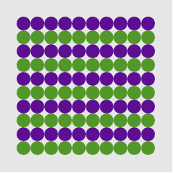
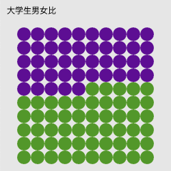
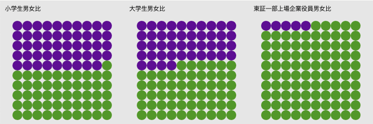
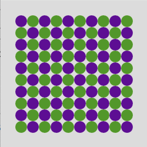
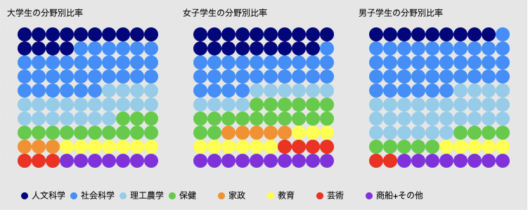

データによって図形の色を変える
描いた図形の色を変えることで、図形に意味を与えてみよう。条件によって色を変える
練習問題で、10行10列の100個の円を描きました。その円の色を1行ごと交互に変えてみます。 つまり、行を表す番号(0から9)によって、場合分けして、色を指定します。ある条件(たとえば、番号が偶数)の時には、特定の処理(たとえば、色を黄色にする)を実行するように書くには、条件分岐のためのif文を使います。リストT1-2-1では、その条件(偶数)の時とそうでない(奇数)時の処理を指定するため、書き方2を使っています。
if(j%2 == 0) { // jは行を表す番号、先頭行は0
fill(255, 204, 0); // 塗りを黄色にする
}else{
fill(154, 205, 50); // 塗りを黄緑にする
}
%は余りを計算する算術演算子で、j%2==0は、jを2で割った余りが0と等しいか、つまりjが偶数かどうかを判定していることになります。

【リストT1-2-1】
let x = 35; //最初の円のx座標
let y = 35; //最初の円のy座標
function setup() {
createCanvas(250, 250);
noStroke(); //枠線は描かない
}
function draw() {
background(230);
for (let j=0; j<10; j++) { // j++はj=j+１と同じ
if(j%2 == 0) {
fill(102, 0, 153); // 塗りを紫にする
}else{
fill(51, 153, 0); // 塗りを緑にする
}
for (let i=0; i<10; i++) { // i++はi=i+１と同じ
circle(x+i*20, y+j*20, 20);
}
}
}
データを表す…世界が100個の円だったら
環境科学者Donella Meadowsが、世界を人口が1000人の村に例えて、人種や宗教などどんな人が住んでいるかをシンプルな人数で表現したのが、State of the Village reportです。その後、全体の人口を100人に単純化し、「世界が100人の村だったら」として日本でも出版されました。これは、さまざまな属性が集まって全体100を構成していることを示すデータ表現方法です。この表現手法をさらに単純化して、描いた100個の円の色分けで、2項目のデータの割合を表してみましょう。
例えば、下は大学生の男女比を表したものです。文部科学省の発表しているデータによると、大学の在学者数のうち女子は1,314,354、男子は1,631,245人(2023年度)です。大学生全体を「100人の世界」として、色分けしました。 データのタイトル、女子学生数、男子学生数を覚えておく変数を用意しています。
let dataTitle = "大学生男女比"; //データのタイトル let femaleS = 1314354; //女子学生数 let maleS = 1631245; //男子学生数データのタイトルは、text関数を使って、画面上に表示します。
色分けする円の個数は、男女の比率で決まります。比率をあらかじめ、setup()の中で計算し、その結果を変数ratioに入れておきます。roundは数値を整数に四捨五入する関数です。
ratio = round(femaleS / (femaleS + maleS) * 100); //女子学生の比率を計算
100個の円を描いているループの中で、ratioの数の円を描いたところで、色を変えます。そのために何個の円を描いたかを覚えておく変数nを定義しています。そして、ループの中でnに1加え、nの値をif文で調べて、色を決めています。
let n = 0; //何個の円を描いていたかを覚えておく変数draw()関数は繰り返し実行され、100個の円は描き直されています。変数nはdraw()関数の{ と }の中で宣言されています。このような変数は、{ と }の中だけで有効なローカル変数です。これに対して、{ と }の外で定義される変数(リストT1-2-2では先頭のxやratioなど)をグローバル変数と呼び、プログラムの中全体で使える変数です。

【リストT1-2-2】
let x = 35; //最初の円のx座標
let y = 50; //最初の円のy座標
let dataTitle = "大学生男女比"; //データのタイトル
let femaleS = 1314354; //女子学生数
let maleS = 1631245; //男子学生数
let ratio = 0; //女子学生の比率
function setup() {
createCanvas(250, 250);
noStroke();
ratio = round(femaleS / (femaleS + maleS) * 100); //女子学生の比率
}
function draw() {
background(230);
fill(0);
text(dataTitle, 10, 20); //データタイトルの表示
let n = 0; //何個の円を描いていたかを覚えておく
for (let j=0; j<10; j++) {
for (let i=0; i<10; i++) {
n++; //描いた円の個数を１増やす
if(n <= ratio){ //描いた円の数がratioになるまでは紫
fill(102, 0, 153); // 塗りを紫にする
}else {
fill(51, 153, 0); // 塗りを緑にする
}
circle(x+i*20, y+j*20, 20);
}
}
}
データを配列に入れておく
ひとつのデータを扱うのであれば、リストT1-2-2のように、データを個別に変数に格納しておくので問題ありませんが、複数の種類のデータを処理する場合、個別に変数を定義するのは複雑になり面倒で、適切ではありません。リストT1-2-2の例でいうと、データのタイトル、女子数、男子数の3つの値をまとめて扱えるようにするのが便利です。 それには、配列 を使います。データ名、女子数、男子数の順に、配列dataに値を格納するには次のように書きます。
let data = ["大学生男女比", 1314354, 1631245];こうすると、データのタイトルはdata[0]に、女子学生数はdata[1]に、男子学生数はdata[2]に格納されます。 配列dataを使う書き方をリストT1-2-3に示します。
【リストT1-2-3】
let x = 35; //最初の円のx座標
let y = 50; //最初の円のy座標
let data = ["大学生男女比", 1314354, 1631245];
let ratio = 0;
function setup() {
createCanvas(250, 250);
noStroke();
ratio = round(data[1] / (data[1] + data[2]) * 100); //女子学生の比率
}
function draw() {
background(230);
fill(0);
text(data[0], 10, 20); //データタイトルの表示
let n = 0; //何個目の円を描いているか
for (let j=0; j<10; j++) {
for (let i=0; i<10; i++) {
n++;
if(n <= ratio){ //描いた円の数がratioになるまでは紫
fill(102, 0, 153); // 塗りを紫にする
}else {
fill(154, 205, 50); // 塗りを黄緑にする
}
circle(x+i*20, y+j*20, 20);
}
}
}
関数を定義する
違う場面での男女比のデータを比較することを考えます。下図のように、データのタイトル、女子数、男子数の3つの値のセットが複数あり、それぞれに100個の円で表すという例です。3セットのデータをリストT1-2-3と同様に円の色分けで表し、並べて描いたものです。
これを実現するには、リストT1-2-3の
- (1)draw()内の、黒字でデータのタイトルを書く部分
- (2)draw()内の、ratioまで紫、その後緑で、100個の円を描く部分
関数を定義する際には、次の3つのことを決めます。
- ・どんな処理をするか → (1)と(2)の処理
- ・そのために必要なデータは何か(必要なデータは引数で関数に渡す) → タイトル、値、描画位置
- ・戻り値を返すか、返すならその値は何か → 描画するだけで値は返さない
関数名をdrawDataCirclesとし、引数を次の6個とします。戻り値はありません。
function drawDataCircles(title, r, titleX, titleY, startX, startY){ ... }
↑関数名 ↑ title:データ名
r：女子の円の個数
titleX, titleY：データ名の左下のx, y座標
startX, startY：最初の円の中心のx, y座標
リストT1-2-3をこの関数を使って書き換えたのがリストT1-2-4です。draw()関数の中身が短く、わかりやすくなりました。
この関数を使って、３種のデータを比較するプログラムを書く練習を【問題T1-2-2】でしてみよう。
【リストT1-2-4】
let x = 35; //最初の円のx座標
let y = 50; //最初の円のy座標
let data = ["大学生男女比", 1294320, 1621285];
let ratio = 0;
function setup() {
createCanvas(250, 250);
noStroke();
ratio = round(data[1] / (data[1] + data[2]) * 100); //比率を計算しておく
}
function draw() {
background(230);
drawDataCircles(data[0], ratio, 10, 20, x, y); //定義した関数の呼び出し
}
function drawDataCircles(title, r, titleX, titleY, startX, startY){
fill(0);
text(title, titleX, titleY);
let n = 0;
for (let j=0; j<10; j++) {
for (let i=0; i<10; i++) {
n++;
if (n <= r) {
fill(102, 0, 153); // 塗りを紫にする
} else {
fill(51, 153, 0); // 塗りを緑にする
}
circle(startX+i*20, startY+j*20, 20);
}
}
}
演習問題

【問題T1-2-1】リストT1-2-1を修正して、交互に市松模様のように円の色を変えてみよう。
【問題T1-2-2】リストT1-2-4で定義した関数drawDataCirclesを使って、３種のデータを比較するプログラムを書いてみましょう。 ３種のデータ列を個別の１次元配列に入れてもいいですが、2次元配列(要素が配列の配列)を使うと繰り返し処理が書きやすくなります。
下に[データ名, 女子数, 男子数]を要素とした2次元配列を示します。
let data = [ ["小学生男女比", 2957229, 3092456], //e-Stat 学校基本調査令和5年度 ["大学生男女比", 1294320, 1621285], ["東証一部上場企業役員男女比", 983, 20043] //内閣府男女共同参画局 東証一部上場企業の役員調査 ];データタイトル"大学生男女比"はdata[1][0]、女子学生数はdata[1][1]で参照できます。
データ名の描画位置は250ピクセルずつ右へ移動しています(最初の円の中心位置も同じ)。
【問題T1-2-3】上の例では、2項目のデータを色分けして、割合を表しましたが、複数の項目の割合を色分けで表したのが下の例です。政府が公開している学校基本調査から関連学科別の学生数のデータを、全学生、女子学生、男子学生で比較しています。

100個の円の塗り分けの表現では、項目数が多くなりすぎると見にくくなるので、この例の8項目ぐらいが限界でしょう。
自分で調べたデータの割合を複数描いて、その変化、違いを見比べられるようにしてみよう。複数のデータセットとしては、時代・時間の違い、場所の違い、対象の違いなどがあげられます。